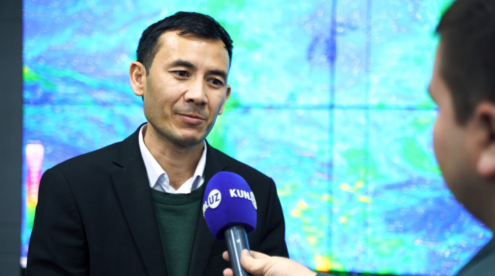

“Insonlar o‘zini xavfsiz his qilmaydigan shahar” - Parlamentda Toshkentdagi muammolar muhokama qilindi
Haligacha bosh rejaning yo‘qligi, tirbandliklarning ko‘payib borayotgani, shaharsozlikdagi yondashuvlarni o‘zgartirish zarurati va ustuvorlik berilmayotgan jamoat transporti. Qonunchilik palatasidagi konferensiyada rasmiylar va jamoatchilik faollari Toshkent shahridagi o‘tkir muammolar haqida so‘z yuritdi.

O‘zbekiston o‘smirlari Angliyani JChdan chiqarib yubordi. Navbatda Fransiya

Jo‘rabek Mirzamahmudov energetika islohoti orqali nimalarga erishilishi haqida gapirdi

Oltiariqda adirlikka barpo qilingan uzumzorning katta qismi qurib bitdi: aybdor hamma va hech kim

5 o‘lim va 6 yarador – Farg‘onadagi dahshatli avtohalokat tafsiloti (reportaj)
Muharrir tanlovi

Bu yil O‘zbekistonda qanday qish kutilmoqda? – iqlimshunos bilan intervyu